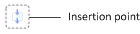

Configure parallel activities in a workflow
Important
Diese Dokumentation ist teilweise von Microsoft verfasst und wurde nicht auf Vollständigkeit geprüft. Wenn informationen fehlen oder ein weiteres Kapitel hinzugefügt werden soll bitte eine Mail an das Dokumentations Team schreiben.
To configure a parallel activity, complete the following procedures in the workflow editor.
A parallel activity consists of workflow branches that run at the same time.
Name a parallel activity
Follow these steps to enter a name for a parallel activity.
- Right-click the parallel activity, and then click Properties to open the Properties form.
- In the left pane, click Basic Settings.
- In the Name field, enter a unique name for the parallel activity.
- Click Close.
Configure the branches of a parallel activity
Follow these steps to add and configure the branches of this parallel activity.
Double-click the parallel activity to display the branches of the parallel activity.
To add a branch, drag the Branch element from the Workflow elements area to an insertion point on the canvas. The following figure shows an insertion point.

Note
The order of the branches is not important because all the branches of a parallel activity run at the same time.
To configure each branch, see Configure parallel branches in a workflow.